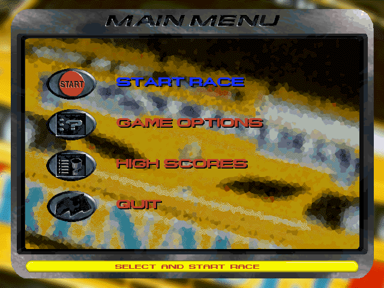
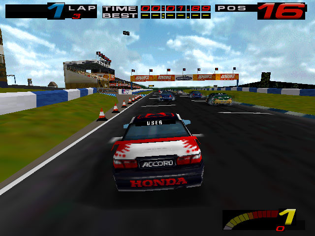

名稱：本田錦標賽1／TOCA：房車錦標賽 (TOCA: Touring Car Championship／Championship Racing，英文版) 簡介：Codemasters 1997年出品的賽車遊戲 [待補]。

保護：光碟 限制：只能在Win9x系統上安裝。 備註：非安裝移機者，需設定下列Registry（假設安裝目錄為C:\TourCar，光碟在D）： [HKEY_LOCAL_MACHINE\Software\Codemasters\Touring Car] [HKEY_LOCAL_MACHINE\Software\WOW6432Node\Codemasters\Touring Car] "GameDirectory"="C:\\TourCar" "CD_Drive"="D:" 備註：XP以上系統執行時，需設定setup.exe與tourcars.exe為Win9x相容。 備註：VirtualBox無法執行，虛擬機請使用VMware。 檔案：patch11a.rar = 1.1a更新檔 tourcar.rar = 已安裝好的1.1a版(未破解)